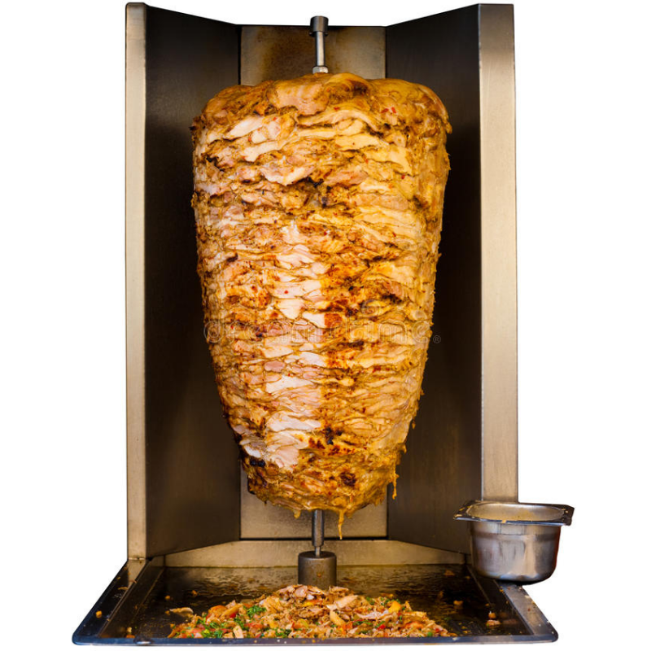
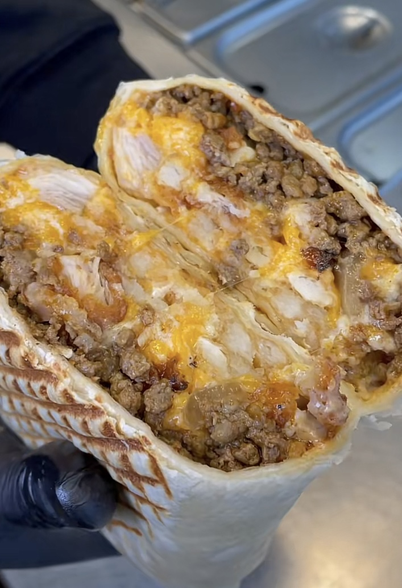
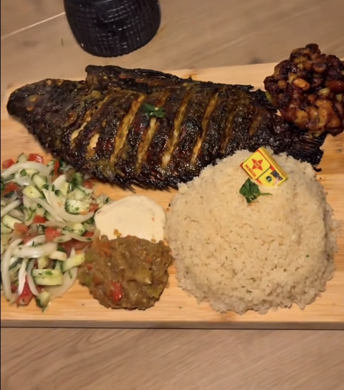
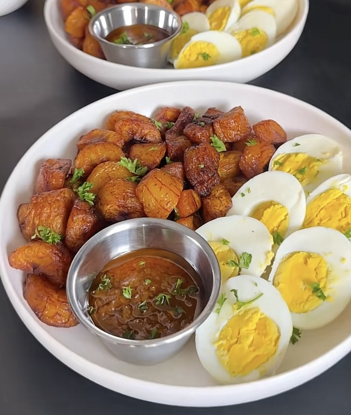
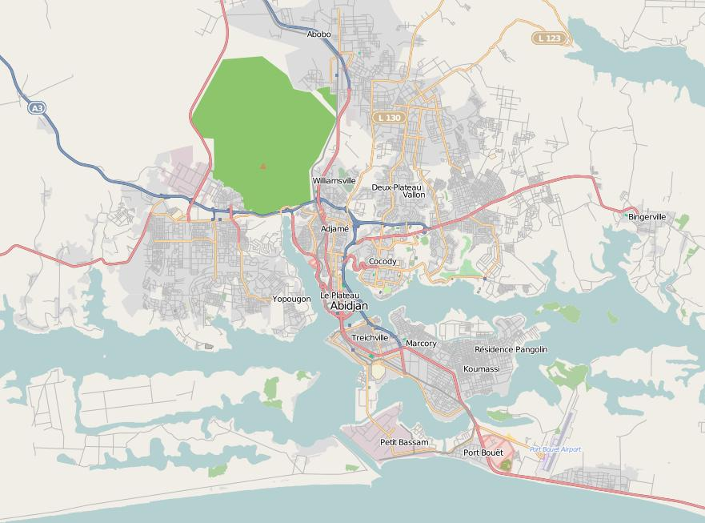

Nouveautés du Kebab

Regardez les nouvelles sorties du Kebabier de Best'sandwich
Welcome bienvenue dans l'un des plus beaux stades du monde, le thêatre majestieux du Fc Barcelone , le Camp Nou. A l'affiche le Fc Barcelone contre les olympiens de l'Olympique de Marseille.
Alors Florian qui sera l'homme du match selon toi ? Florian: Je dirai Pedri. Son profil de playmarker est loué pour sa vision du jeu , ses gestions des temps forts et des temps faibles du match avec sérénité, sa qualité de passe bref tout ce qu'il faut pour faire de lui le tché du Fc Barcelone.

Regardez les nouvelles sorties du Kebabier de Best'sandwich

Voici un tacos 2 viandes. Kebab poulet meilleur duo.

Accompagnement national de la Côte d'Ivoire reconnu sur la scène internationale.

Voici l'un des plats préférés des ivoiriens, pour certains c'est le meilleur plat du pays. Ce plat est fait à base de bananes plantain et c'est très bon.
Cliquez sur les illustrations pour decouvrir les lieux et monuments des champions d'Afrique.

Quartier situé à l'ouest d'Abidjan.
Quartier situé à l'est du Plateau, à Abidjan.